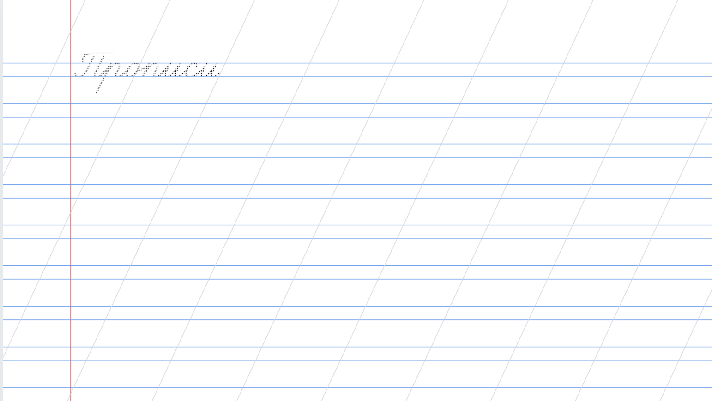

Создайте идеальные рабочие листы для уроков чистописания. Наш бесплатный онлайн-инструмент позволяет сгенерировать прописи в узкую косую линейку с вашим текстом за пару кликов.
 ✍️ Создать Прописи (Бесплатно)Разлиновка с частыми наклонными линиями (которую часто называют «узкая косая») — это стандарт обучения письму в 1 классе российских школ. Она помогает ученику:
В отличие от обычной тетради, наш генератор позволяет прописать серым цветом или пунктиром любые слова: имена детей, сложные слоги или целые предложения.
Инструмент работает онлайн, без регистрации и установки программ. Подходит для учителей начальных классов, логопедов и заботливых родителей.